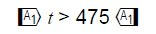

Bitte beachten Sie, dass die Betriebsanleitung des Herstellers Vorrang gegenüber den nachfolgenden allgemeinen Angaben hat.
Tabelle C.1Tragfähigkeiten gemäß DIN EN 13414-2
Art der Seilendverbindung |
Pressklemmenwerkstoff |
Seileinlage |
Veränderte Tragfähigkeiten in % der Tragfähigkeit des Anschlagseils
Temperatur; t, °C |
|||||
|---|---|---|---|---|---|---|---|---|
| −40<t≤100 | 100<t≤150 | 150<t≤200 | 200<t≤300 | 300<t≤400 | 400<t | |||
| Zurückgebogene Seilschlaufe | Aluminium | Faser | 100 | nicht anwenden | nicht anwenden | nicht anwenden | nicht anwenden | nicht anwenden |
| Zurückgebogene Seilschlaufe | Aluminium | Stahl | 100 | 100 | nicht anwenden | nicht anwenden | nicht anwenden | nicht anwenden |
| Flämisches Auge | Stahl | Faser | 100 | nicht anwenden | nicht anwenden | nicht anwenden | nicht anwenden | nicht anwenden |
| Flämisches Auge | Stahl | Stahl | 100 | 100 | 90 | 75 | 65 | nicht anwenden |
| Spleiß | − | Faser | 100 | nicht anwenden | nicht anwenden | nicht anwenden | nicht anwenden | nicht anwenden |
| Spleiß | − | 100 | 100 | 90 | 75 | 65 | nicht anwenden | |
Für den Einsatz von Rundstahlketten der Güteklassen 2 und 4 in Feuerverzinkereien siehe DGUV Regel 109-004 "Rundstahlketten als Anschlagmittel in Feuerverzinkereien".
Tabelle C.2.1 Tragfähigkeiten gemäß DGUV Information 209-021 "Belastungstabellen für Anschlagmittel aus Rundstahlketten, Stahldrahtseilen, Rundschlingen, Chemiefaserhebebändern, Chemiefaserseilen, Naturfaserseilen"
| Temperatur °C | bis −20 | bis −10 | 0 bis 100 | bis 150 | bis 200 | bis 250 |
| Tragfähigkeit % | 50 | 75 | 100 | 75 | 50 | 30 |
Tabelle C.2.2 Tragfähigkeiten gemäß DIN EN 818-6
|
Güteklasse
|
Zulässige Belastungen, angegeben als Prozentsatz der Tragfähigkeit
Temperatur t in °C |
||||
|---|---|---|---|---|---|
| −40<t≤200 | 200<t≤300 | 300<t≤400 | 400<t≤475 |  |
|
| 4 | 100 | 100 | 75 | 50 | nicht zulässig |
| 8 | 100 | 100 | 75 | nicht zulässig | |
Tabelle C.2.3 Tragfähigkeiten gemäß PAS 1061
| Temperatur °C | niedrigste Einsatztemperatur
bis 200 nach Herstellerangabe |
über 200 bis 300 | über 300 bis 380 |
| Tragfähigkeit % | 100 | 90 | 60 |
Flachgewebte Hebebänder und Rundschlingen aus Chemiefasern können in folgenden Temperaturbereichen mit 100 % der Tragfähigkeit eingesetzt werden:
a) Polyester und Polyamid: −40 °C bis 100 °C
b) Polypropylen: −40 °C bis 80 °C
Die Verwendung von flachgewebten Hebebänder und Rundschlingen bei einer Temperatur oberhalb oder unterhalb der angegebenen Temperaturen ist unzulässig.
Anschlag-Faserseile aus Natur- und Chemiefaserseilen können in folgenden Temperaturbereichen mit 100 % der Tragfähigkeit eingesetzt werden:
a) Polyester und Polyamid: −40 °C bis 100 °C
b) Manila, Sisal, Hanf und Polypropylen: −40 °C bis 80 °C.
Die Verwendung von Anschlag-Faserseilen aus Natur- und Chemiefaserseilen bei einer Temperatur oberhalb oder unterhalb der angegebenen Temperaturen ist unzulässig.